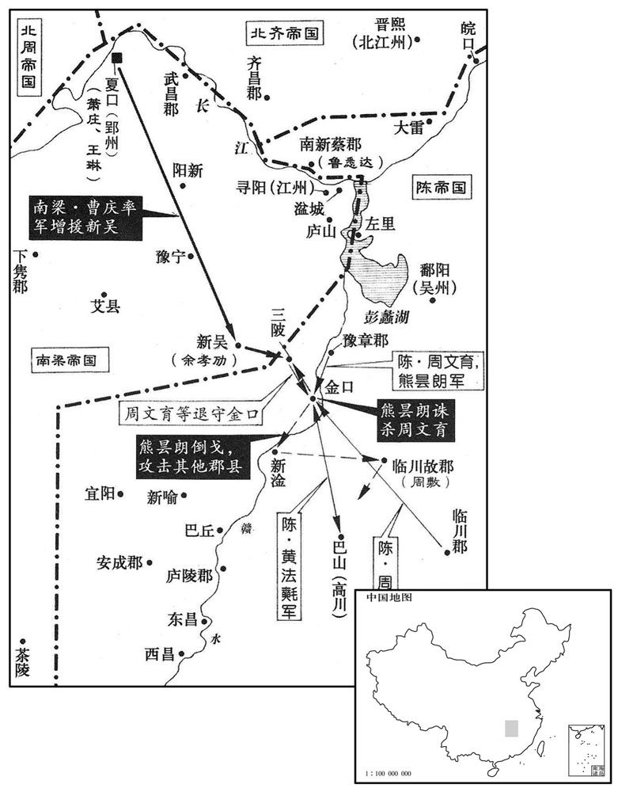
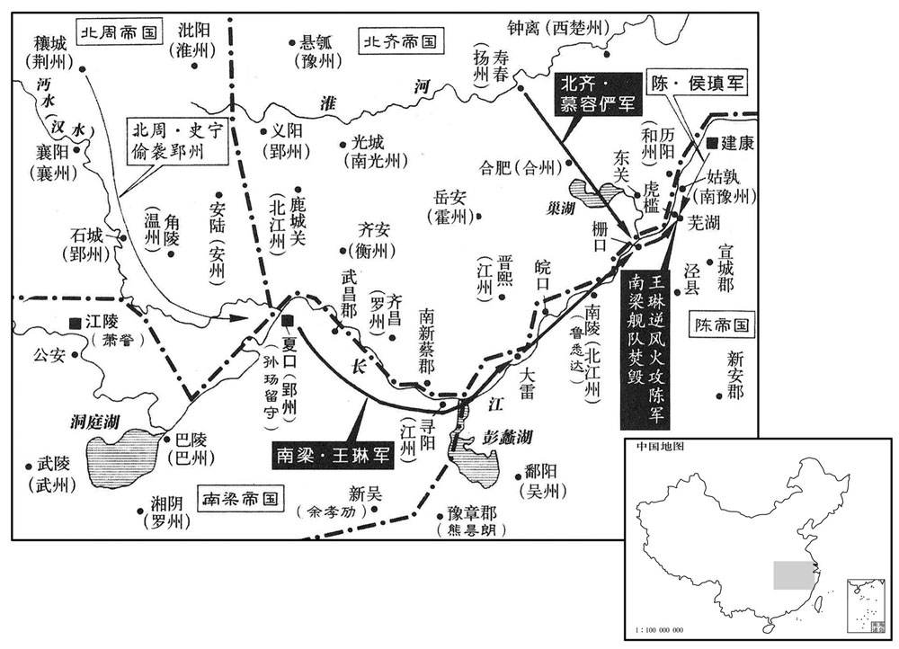

公元559年资治通鉴：本年记事、原文与白话对照
按原书编年位置阅读；追叙和史论不等于本年发生的事件。白话采用所据译本，缺译不以生成译文补齐。
卷167 · 本年记事
公元559年 · 陈高祖武皇帝永定三年
三年〔（己卯、五五九）〕
上传原文的注释括号有异常，字符原样保留；无法可靠划分的段落默认全文显示。
本年事件索引（现代整理）
- 宇文护上表归政，周王开始亲理政务
- 王琳召见淳于量，陈朝任淳于量为开府仪同三司
- 侯瑱率军在合肥焚毁北齐战船
- 高洋在甘露寺静居后，杀死尚书左仆射唯暹妻子
- 北齐斛律光击败西魏曹回公，夺取文侯镇
- 北齐任高德政为尚书右仆射
- 吐谷浑侵犯北周边境，北周派贺兰祥出击
- 高洋抵达邺城
- 永嘉王萧庄抵达郢州并向北齐进贡
- 高洋因杜弼反对禅代而怀恨，派人将其杀死
- 北周命有关部门重新制定历法
- 陈朝派徐度在南皖口筑城
- 高德政屡次规劝高洋，被高洋刺伤并斩杀
- 高洋封皇子绍廉为长安王
- 北周任侯莫陈崇为大司徒、达奚武为大宗伯
- 北周下诏免究赦免前罪行，但仍须追缴官仓损失
- 贺兰祥击败吐谷浑，攻取洮阳、洪和并设置洮州
- 发生日食
- 高洋因谶言杀害二十五家元氏宗族并囚禁十九家
- 周文育等讨伐余公扬，后被熊昙朗杀害
- 鲁悉达部将梅天养引北齐军入城，鲁悉达率部降齐
- 北周令群臣上封事直谏，乐逊提出四项建议
- 韦敻拒绝出仕并劝宇文护不要奢侈
- 寇儁坚持归还多得的绢帛，受到周世宗礼遇
- 侯安都击败曹庆等人，余孝猷率四千家投降
- 陈朝命临川王陈蒨在南皖口筑城
- 陈武帝病逝，临川王陈蒨被迎回建康即位
- 陈昌仍被扣留长安，朝中秘不发丧并召回临川王陈蒨
- 侯安都带兵护送陈蒨即位，章皇后发布诏命
- 高洋杀尽元氏宗族，并赐元景安改姓高氏
- 陈武帝葬于万安陵，庙号高祖
- 北齐封高绍义为广阳王，任高孝琬为左仆射
- 北周改称皇帝并改元武成
- 北齐准许民间恢复本姓，不得冒姓元氏
- 陈顼改封安成王，皇子伯茂封始兴王
- 北周任十六岁的宇文宪为益州总管
- 陈朝立皇子伯宗为皇太子
- 高洋前往晋阳
- 北周封宇文邕、宇文宪等弟弟为诸王
- 陈朝立太子母沈氏为皇后
- 北周少保蔡佑去世
- 高洋病重去世，太子高殷即位并停止各项土木工程
- 王琳得知陈武帝去世，拥立萧庄并率军东下
- 北齐任斛律金为左丞相、高演为太傅等
- 高洋灵柩抵达邺城
- 北齐改封皇子绍仁、绍义、绍广为王

本年形势与背景参考图

本年形势与背景参考图
春，正月，己酉，周太师护上表归政，〔上，时掌翻。〕周王始亲万机；军旅之事，护犹总之。初改都督州军事为总管。〔诸州总管自此始。〕
春季，正月，己酉（疑误），北周太师宇文护上表表示把政权归还周王，周王开始亲理万机；但军事方面的事务，宇文护还是总揽着。开始把都督州军事这一官职改称总管。
王琳召桂州刺史淳于量。〔五代志：始安郡，梁置桂州，今为静江府。〕量虽与琳合而潜通于陈；二月，辛酉，以量为开府仪同三司。
王琳召见桂州刺史淳于量。淳于量虽然表面上与王琳合作，但背地里却与陈朝相通。二月，辛酉（初三），朝廷任命淳于量为开府仪同三司。
壬午，侯瑱引兵焚齐舟舰于合肥。〔舰，户黯翻。〕
壬午（二十四日），侯带兵在合肥烧毁了北齐的兵舰。
丙戌，齐主于甘露寺禅居深观，〔据齐纪，甘露寺在辽阳。此鄙语所谓「猕猴坐禅」也。〕唯军国大事乃以闻。尚书左仆射唯暹卒，齐主幸其第哭之，谓其妻李氏曰：「颇思暹乎﹖」对曰：「思之。」帝曰：「然则自往省之。」〔省，悉景翻。〕因手斩其妻，掷首墙外。
丙戌（二十八日），北齐国主文宣帝在甘露寺坐禅念经，传令只有发生了军机大事才可以报告他。尚书左仆射崔暹去世，文宣帝到他家里去哭吊，问他的妻子李氏说：“你很想崔暹吗？”李氏回答说：“很想。”文宣帝说：“那么你自己去看望他吧！”于是挥剑斩下李氏的首级扔到墙外头。
齐斛律光将骑一万〔将，即亮翻；下同。骑，奇寄翻。〕击周开府仪同三司曹回公，斩之，柏谷城主薛禹生弃城走，遂取文侯镇，立戍置栅而还。〔还，从宣翻，又如字。〕
北齐斛律光带领骑兵一万人，去袭击北周开府仪同三司曹回公，将他斩杀。柏谷城守将薛禹扔下城池逃跑，于是斛律光占领了文侯镇，在那儿建立营栅，留下戍守将士，才回来。
三月，戊戌，齐以〔【章：十二行本「以」下有「侍中」二字；乙十一行本同；孔本同；张校同。】〕高德政为尚书右仆射。
三月，戊戌（十一日），北齐任命待中高德政为尚书右仆射。
吐谷浑寇周边；〔吐，从暾入声。谷，音浴。〕庚戌，周遣大司马贺兰祥击之。
吐谷浑入侵北周边境。庚戌，（二十三日），北周派大司马贺兰祥去抗击。
丙辰，齐主至邺。
丙辰（二十九日），北齐文宣帝到了邺城。
梁永嘉王庄至郢州，遣使入贡于齐。〔使，疏吏翻。〕王琳遣其将雷文策袭后梁监利太守蔡大有，杀之。〔沈约曰：监利县，疑是吴所立，晋属南郡，宋属巴陵郡，后梁置监利郡。今监利县在陵府东南百八十里。〕
梁永嘉王萧庄抵达郢州，派使者向北齐进贡礼品。王琳派他的将领雷文策去袭击后梁监利太守蔡大有，杀了他。
齐主之为魏相也，〔相，息亮翻。〕胶州刺史定阳文肃侯杜弼为长史，〔五代志：高密郡，旧置胶州，唐武德五年，改曰密州。五代志：文城郡吉昌县，后魏曰定阳。〕帝将受禅，弼谏止之。〔见一百六十三卷简文帝大宝元年。〕帝问：「治国当用何人﹖」〔治，直之翻。〕对曰：「鲜卑车马客，会须用中国人。」帝以为讥己，衔之。高德政用事，弼不为之下，尝于众前面折德政；德政数言其短于帝，弼恃旧，不自疑。〔折，之舌翻。数，所角翻；下同。高德政谗杜弼而不知杨愔之忌己，杜弼恃旧而不疑德政之谗己；昏昏于利欲之场，祇思害人，而不知其身之受害者多矣。〕夏，帝因饮，酒积其愆失，遣使就州斩之；〔使，疏吏翻。〕即而悔之，驿追不及。
北齐国主文宣帝还在当东魏的宰相时，胶州刺史定阳文肃侯杜弼当长史，文宣帝将要接受禅让时，杜弼曾进谏劝阻他。文宣帝问他：“治理国家应该任用什么样的人？”杜弼回答说：“鲜卑族不过是些驾车骑马的流浪汉，如果要说治理国家，还是应当用中原的汉人。”文宣帝认为他这话是讥笑自己不能治国，对他记恨在心。高德政管政事时，杜弼不服他的气，曾经当着众人的面驳斥高德政的意见。高德政多次在文宣帝面前数说杜弼的短处，杜弼自恃是旧臣，并不怀疑高德政会在文宣帝面前进谗言害自己。夏季，文宣帝乘着酒酣，把他的罪愆过失积累起来清算，派使者到州里去把杜弼斩首。不久后悔了，派驿使去追回成命，已经来不及了。
闰四月，戊子，周命有司更定新历。〔更，工衡翻。〕
闰四月，戊子（初二），北周命令有关部门重新修订新历法。
丁酉，遣镇北将军徐度将兵城南皖口。〔南皖口，皖水入江之口也。祝穆曰：皖水自霍山县流入，经怀宁县北二里，又东南流三百四十里，入大江。吴地志：皖口，今舒州之山口镇。将，即亮翻。皖，户板翻。〕
丁酉（十一日），陈朝派镇北将军徐度带兵在南皖口修城。
齐高德政与杨愔同为相，愔常忌之。〔高德政事齐主于初潜，又德政劝成之，权利所集，故为杨愔所忌。〕齐主酣饮，德政数强谏，〔数，所角翻。〕齐主不悦，谓左右曰：「高德政恒以精神凌逼人。」〔恒，户登翻。〕德政惧，称疾，欲退。帝谓杨愔曰：「我大忧德政病。」对曰：「陛下若用为冀州刺史，病当自差。」〔差，叱驾翻。病差，犹言病瘳也。〕帝从之。德政见除书，即起。帝大怒，召德政谓曰：「闻尔病，我为尔针。」〔医家按穴用针，可以愈疾，故云然。为，于伪翻。〕亲以小刀刺之，血流沾地。又使曳下斩去其足，〔刺，七亦翻。去，羌吕翻。〕刘桃枝执刀不敢下，帝责桃枝曰：「尔头即堕地！」桃枝乃斩其足之三指。帝怒不解，囚德政于门下，〔囚于门下省。〕其夜，以毡舆送还家。明旦，德政妻出珍宝汉四床，欲以寄人，帝奄至其宅，见之，怒曰：「我御府犹无是物！」诘其所从得，皆诸元赂之，遂曳出，斩之。妻出拜，又斩之，〔高德政之祸，犹宋之颜浚〔竣〕也。诘，去吉翻。〕并其子伯坚。以司州牧彭城王浟为司徒，侍中高阳王湜为尚书右仆射；乙巳，以浟兼太尉。〔浟，夷周翻。湜，常职翻。〕
北齐高德政与杨同为宰相，杨常常忌恨他。北齐国主文宣帝酗酒酣饮，高德政多次激切地进谏，文宣帝不高兴，对身边左右的人说：“高德政经常以盛气欺凌逼迫我。”高德政听说后，心中恐惧，托言有病，想引退。文宣帝对杨说：“我很担忧高德政的病。”杨说：“陛下如果起用他当冀州刺史，他的病自己就会好的。”文宣帝听从了这个建议。高德政见到任命他为冀州刺史的文书，马上就起来没病了。文宣帝知道后勃然大怒，把高德政召来，对他说：“听说你病了，我来给你扎扎针。”亲自拿出小刀刺他，血流下一地。又让人把他拉下去砍去他的双脚。刘桃枝拿着刀不敢下手，文宣帝责骂刘桃枝说：“你的头马上就要坠地了！”刘桃枝于是就砍去高德政脚上的三个指头。文宣帝的盛怒还没有缓解，把高德政关在门下省，当天晚上，用铺着毛毡的车子送他回家。第二天早上，高德政的妻子拿出摆满四个坐床的珍宝，想用这些珍宝来托人求情。文宣帝出其不意地到他家，看到了这些珍宝，勃然大怒说：“我的御府里还没有这些宝物呢！”追问高家这些珍宝从何处得来，一问才知道都是诸位元姓的贵族贿赂高德政的东西，于是就把高德政拽出来斩首了。高妻出来拜见文宣帝，又被斩首，一起被斩的还有高德政的儿子高伯坚。文宣帝任命司州牧彭城王高为司徒，侍中高阳王高为尚书右仆射。乙巳（十九日），任命高兼太尉一职。
齐主封子绍廉为长安〔【严：「安」改「乐」。】〕王。
北齐文宣帝封儿子高绍廉为长乐王。
辛亥，周以侯莫陈崇为大司徒，达奚武为大宗伯，武阳公豆卢宁为大司寇，〔五代志：犍为郡犍为县，后周曰武阳。令狐德棻曰：宁之先本慕容氏，前燕之枝庶也，归魏，赐姓豆卢氏。〕柱国辅城公邕为大司空。〔辅城，郡名，在汝州郏城县。〕
辛亥（二十五日），北周任命侯莫陈崇为大司徒，达奚武为大宗伯，武阳公豆卢宁为大司寇，柱国辅城公宇文邕为大司空。
乙卯，周诏：「有司无得纠赦前事；唯貛库仓廪与海内所共，若有侵盗，虽经赦宥免其罪，征备如法。」〔备，偿也。今人犹言填备。〕
乙卯（二十九日），北周下诏，规定：“有关部门不能再检举大赦以前的事；只有国家的车马库、粮仓、货栈是海内所共有的财产，如果有侵吞盗窃的人，虽然经过赦免宽大免去罪行，但必须让他依照规定缴纳钱粮作为赔偿。”
周贺兰祥与吐谷浑战，破之，拔其洮阳、洪和二城，以其地为洮州。〔李延寿曰：贺兰之先与魏俱起，有乞伏，为贺兰莫何弗，因以为氏。刘昫唐志：洮州临潭县，本吐谷浑之洪和城，后周攻得之，置美相县；唐为临潭县，洮州治焉；后移治洮阳城，仍于旧洪和城置美相县；天宝中，废美相□入临潭。洮，土刀翻。〕
北周贺兰祥与吐谷浑开战，打败了吐谷浑，攻取了其所属的洮阳、洪和两城，把这两个城的地方合并为洮州。
五月丙，辰朔，日有食之。
五月，丙辰朔（疑误），发生日食。
齐太史奏，今年当除旧布新。齐主问于特进彭城公元韶曰：「汉光武何故中兴﹖」对曰：「为诛诸刘不尽。」〔为，于伪翻。〕于是齐主悉杀诸元以厌之。〔厌，于协翻。〕癸未，诛始平公元世哲等二十五家，囚韶等十九家。韶幽于地牢，绝食，啖衣袖而死。〔啖，徒敢翻，又徒滥翻。〕
北齐的太史上奏，提议今年应当除旧布新。北齐文宣帝问特进彭城公元韶说：“汉朝光武皇帝为什么能实现中兴大业呢？”元韶回答说：“这是因为当时没有把姓刘的杀干净。”于是文宣帝把姓元的全部杀掉，以此预防类似光武中兴一类的事发生。癸未（二十七日），杀了始平公元世哲等二十五家，把元韶等十九家关起来。元韶关在地牢里，断绝了食物，最后咬嚼衣袖，活活饿死。
周文育、周迪、黄法鳓共讨余公扬，〔公扬，孝顷子也。扬，音扬。〕豫章太守熊昙朗引兵会之，众且万人。文育军于金口，〔自豫章西南入象牙江，至金溪口。〕公扬诈降，谋执文育，文育觉之，囚送建康。〔降，户江翻。〕文育进屯三陂。王琳遣其将曹庆帅二千人救余孝劢，〔将，即亮翻；下同。帅，读曰率；下自帅、达帅同。〕庆分遣主帅常众爱与文育相拒，〔帅，所类翻。〕自帅其众攻周迪及安南将军吴明彻，迪等败，文育退据金口。熊昙朗因其失利，谋杀文育以应众爱，监军孙白象闻其谋，劝文育先之，〔监工衔翻。先，悉荐翻。〕文育不从。时周迪弃船走，不知所在，乙酉，文育得迪书，自赍以示昙朗，昙朗杀之于坐而并其众，〔坐，徂卧翻。〕因据新淦城。〔新淦县，自汉至萧齐属豫章郡，五代志属庐陵郡，唐属吉州。淦，音绀，又音甘。〕昙朗将兵万人袭周放，敷击破之，昙朗单骑奔巴山。〔骑，奇寄翻。〕
周文育、周迪、黄法氍一起讨伐余公。豫章大守熊昙朗带兵去与他们会合，这样共有一万军队。周文育驻扎在金口，余公假装投降，密谋着要在周文育受降时抓住他。周文育察觉到这一密谋，反而把余公抓住送到建康去。周文育接着进驻三陂。王琳派他的部将曹庆率领二千人去救援余孝劢。曹庆分派主帅常众爱去与周文育相对抗，自己率领队伍攻打周迪和安南将军吴明彻，周迪等败退下来，周文育也退守金口。熊昙朗因周迪、周文育兵败，就谋划杀害周文育以接应常众爱。监军孙白象知道了这一密谋，就劝周文育要先动手，但周文育不听。这时周迪扔下船逃跑了，不知去向，乙酉（二十九日），周文育才得到周迪的信，他亲自带着周迪的信去给熊昙朗看，熊昙朗就在座位上把周文育杀了，吞并了周文育的部众，乘势占据了新淦城。熊昙朗又带兵一万人去袭击周敷，周敷把他打败了，熊昙朗单人匹马逃奔巴山。
鲁悉达部将梅天养等引齐军入城。〔鲁悉达据新蔡城。〕悉达帅麾下数千人齐自归，拜平南将军、北江州刺史。〔五代志：宣城郡南陵县，陈置北江州。〕
鲁悉达的部将梅天养等人引领北齐军队入城。鲁悉达自己率领部下几千人渡过长江回去，陈朝拜他为平面将军、北江州刺史。
六月，戊子，周以诏群臣上封事极谏。左光禄大夫猗氏乐逊上言四事：〔猗氏县，汉以来属河东郡。古鄀瑕氏之地，后以猗顿居之，以盬盐致富，遂改为猗氏。上，时掌翻。〕其一，以为「比来守令代期既促，〔比，毗至翻。守，式又翻。〕责其成效，专务威猛；今关东之民沦陷涂炭，若不布政优优，〔诗商颂之辞。毛苌曰：优优，和也。〕闻诸境外，〔闻，音问。〕何以使彼劳民，归就乐土！」〔乐，音洛。〕其二，以为「顷者魏都洛阳，不时殷盛，贵劫之家，竞为侈靡，终使祸乱交兴，天下丧败；〔丧，息浪翻。〕比来朝贵器服稍华，〔朝，直遥翻。〕百工造作务尽奇巧，臣诚恐物遂好移，有损政俗。」〔好，呼到翻。〕其三，以为「选曹补拟，直与众共之；今州郡选置，犹集乡闾，况天下铨衡，不取物望，既非机事，何足可密！〔以此观之，选曹补密奏于上，盖自晋山涛启事始也。〕其选置之日，宜令众心明白，然后呈奏。」其四，以为「高洋据有山东，未易猝制譬犹棋劫相持，争行先后，〔弈棋有劫，彼此争行以相持，以先后着决一枰之胜负。易，以豉翻。〕若一行不当，〔当，丁浪翻。〕或成彼利，诚应舍小营大营大，先保寺域，不宜贪利边陲，轻为举动。」
六月，戊子（初三），北周因为久雨不停，下诏让群臣献上密封的条陈尽力进谏。左光禄大夫猗氏县人乐逊上书说了四件事：其一，认为：“近来太守县令接替的期限太短促，上司又严格责求他们施政的成效，为了表现政绩，他们就专门在威猛上着力。现在关东之民沦陷于水火之中，生灵涂炭，如果不实施比较宽和的政策，让仁政的名声传遍境外，那怎么能使那些劳苦的百姓来投奔我们来呢？”其二，认为：“不久前魏国国都洛阳，一时间富足强盛，贵族权势之家，比赛着奢华浪费，终于使灾祸动乱交替出现，天下丧失破败。同样，近来我国朝廷上的权贵们所用器具、所着服饰也开始奢华起来了，各种工匠们在制造工艺上都争着穷尽奇巧之思，我实在担心这种追美器美佳物的风气成为一时之好，这会损害政教风俗的。”其三，认为：“ 选官员去补缺或准备升迁，这种人事方面的决定应该和大家共同商讨。现在州郡一级选配官员，还要召集乡闾人士征求意见，何况中央政府对官员的考察衡量，是关系天下利弊的大事，竟然不听取社会上的舆论，不按官员在民间的声望来决定，这既然不是什么机密事，有什么可以保密的！官员选拔任用时，应该让大家心里明白，然后再向皇帝启奏。”其四，认为：“高洋占据山东一带，不容易马上制伏他，双方的形势，就象下围棋的打劫一样相持不下，互相争着落子的先后，如果一步不妥当，也许造成了对方的优势。鉴于这种情况，我们的策略应该是舍弃小利，求取大利，先保住自己的封域，不宜为贪图边陲之地而轻举妄动。”
周处士韦敻，〔处，昌吕翻。敻，休正翻。〕孝宽之兄也，志尚夷简，魏、周之际，十征不屈。周太祖甚重之，不夺其志，世宗礼敬尤厚，号曰「逍遥公」。晋公护延之至第，访以政事；护盛修第舍，敻仰视堂，叹曰：「酣酒嗜音，峻宇雕墙，有一于此，未或不亡。」〔夏书五子之歌之辞。〕护不悦。
北周的处士韦是韦孝宽的哥哥，他的志向是崇尚平和淡泊，魏、周之际，曾十次征召他做官，他都不屈志服从。文帝宇文泰对他很尊重，不强迫他改变素志，明帝宇文毓对他的礼遇敬重尤其优厚，称他为“逍遥公”。晋公宇文护把他请到家里，询问他对政事的意见；宇文护把自己的房子修得高大漂亮，韦进门后仰头看看厅堂，感叹地说：“酗酒纵饮，嗜好靡靡之音，修建高峻的房子，雕绘屋墙，这几样如果占了一样，没有不灭亡的。”宇文护听了很不高兴。骠骑大将军、开府仪同三司寇俊，赞之孙也，少有学行。家人常卖物，多得绢五匹，俊于后知之，曰：“得财失行，吾所不取。”访主还之。敦睦宗族，与同丰约，教训子孙，必先礼义。自大统中，称老疾，不朝谒；世宗虚心欲见之，俊不得已入见。王引之同席而坐，问以魏朝旧事；载以御舆，令于王前乘之以出，顾谓左右曰：“如此之事，唯积善者可以致之。”
骠骑大将军、开府仪同三司寇俊是寇的孙子，自小就有学问，有品行。家里人常常卖东西，有一回卖东西多得了五匹绢，寇俊后来知道了，说：“得到财物，失去品行，这是我所不容之事。”于是寻访到绢的主人，把多得的绢还给了他。寇俊平时与宗族里的人和睦相处，和他们保持同样的生活水平，教育训导子孙，必定先把礼义教给他们。从大统中期开始他就托言老病，不再进朝见皇帝。明帝宇文毓虚心礼贤，想和他见面，寇俊不得已才入朝见。明帝拉着他，和他同席而坐，问他有关魏朝的旧事；用御用的车子给他乘坐，让他就在自己面前乘上车子出宫。明帝看看左右的人，说：“象寇俊今天享受的礼遇，只有积善的人才可以得到。”
骠骑将军、开府仪同三司寇儁，〔寇儁所居官，后周之九命也。〕赞之孙也。〔寇赞自秦归魏，见一百一十八卷晋安帝义熙十四年。〕少有学行。家人常卖物，多得绢五匹，儁于后知之，曰：「得财失行，〔少，诗照翻。行，下孟翻。〕吾所不取。」访主还之。敦睦宗族，与同丰约，教训子孙，必先礼义。〔先，悉荐翻。〕自大统中，称老疾，不朝谒；〔朝，直遥翻；下同。〕世宗虚心欲见之，儁不得已入见。〔入见，贤遍翻。〕王引之同席而坐，问以魏朝旧事；载以御舆，令于王前乘之以出，顾谓左右曰：「如此之事，唯积善者可姿致之。」〔史言周王礼贤。〕
本段缺少可靠对应白话，原文完整保留；未使用生成译文。
周文育之讨余孝劢也，帝令南豫州刺史侯安都继之。文育死，安都还，遇王琳将周炅、周协南归，〔王琳使周炅助曹庆攻周迪自南川归也。将，即亮翻。炅，古迥翻。〕与战，擒之。孝劢弟孝猷帅所部四千家诣安都降。〔帅，读曰率。降，户江翻。〕安都进军至左里，击曹庆、常众庆，破之。众爱奔庐山，庚寅，庐山民斩之，传首。
周文育讨伐余孝劢的时候，陈武帝命令南豫州刺史侯安都带兵去当后备军。周文育被谋害后，侯安都只好回来，路上遇到王琳带着周炅、周协回南方去，就拦住打了一杖，把王琳等人俘获了。余孝劢的弟弟余孝猷率领他管辖的百姓四千家到侯安都那里去请降，侯安都挥兵前进到左里，猛攻曹庆、常众爱，打败了他们。常众爱奔逃到庐山，庚寅（初五），庐山的百姓杀了他，把他的首级拿出来示众。
诏临川王蒨于南皖口置城，〔蒨，仓甸翻。〕使东徐州刺史吴兴钱道戢守之。〔戢，则立翻。〕
陈武帝下诏让临川王陈在南皖口设立城堡，派东徐州刺史吴兴人钱道戢去驻守。
丁酉，上不豫，丙午，殂。〔年五十七。〕上临戎制胜，英谋独运，而为政务崇宽简，非军旅急务，不轻调发。性俭素，常膳不过数品，私宴用瓦器、蚌盘，〔调，徒钓翻。蚌盘者，髹器以蚌为饰，今谓之螺钿。蚌，步项翻。〕殽核充事而已；后宫无父翠之饰，不设女乐。
丁酉（十二日），陈武帝身体不适，丙午（二十一日），病逝。陈武帝每临军机大事都能确定破敌制胜之道，他英勇善谋，独出心裁，而处理政务则崇尚宽和简朴，如不是军旅急务，一般不轻易调发军队。他天性节俭朴素，平常膳食只有几样菜而已，私人宴会用瓦器、饰以蚌壳的木盘，酒菜足够应付也就行了。后宫的妃子、宫女没有披金带翠的服饰，也不设女乐。
时皇子昌在长安，〔梁元帝承圣元年，征昌为领直，江陵之陷，没于长安。〕内无嫡嗣外有强敌，宿将皆将兵在外，朝无重臣，〔将，即亮翻。朝，直遥翻；下同。〕唯中领军杜棱典宿卫兵在建康。章皇后召棱及中书侍郎蔡景历入禁中定议，秘不发丧，急召临川王蒨于南皖。景历亲与宦者、宫人密营敛具。〔敛，力赡翻。〕时天暑，须治梓宫，〔治，直之翻。〕恐斤斧之声闻于外，乃以蜡为秘器，〔蜡，蜜滓也。汉官有东园秘器。闻音问。〕文书诏敕，依旧宣行。
当时皇子陈昌被俘在长安，陈朝国内没有嫡亲的皇位继承人，国外又有强大的敌人，有经验的老将都带兵在外头，朝廷里也没有重臣。只有领军杜棱掌管宫廷宿卫军还在建康。章皇后召杜棱和中书侍郎蔡景历进入宫禁之中商量主意，决定秘不发丧，紧急从南皖召回临川王陈。蔡景历亲自和宦官、宫人一起秘密地办理装殓尸体的器具。当时天气很热，必须做一个较大的棺材，因为担心斧头砍削木头的声音传出宫外，就用蜡做成一装尸的棺材。朝廷的一应文书诏敕，仍然按平时的样子宣布颁行。
侯安都军还，适至南皖，与临川王俱还朝。甲寅，王至建康，入居中书省，安都与群臣定议，奉王嗣位，王谦让不敢当。皇后以昌故，未肯下令，群臣犹豫不能决。安都曰：「今四方未定，何暇及远！临川王有大功于天下，〔武帝既杀王僧，辩，使蒨平杜龛、张彪等以定东土，故云有大功。〕须共立之。今日之事，后应者斩！」即按剑上殿，白皇后出玺，又手解蒨发，推就丧次，〔上，时掌翻。玺，斯氏翻。推，吐雷翻。为侯安都恃定策之功以杀其身张本。〕迁殡大行于太极西阶。皇后乃下令，以蒨纂承大统。是日，即皇帝位，大赦。秋，七月，丙辰，尊皇后为皇太后。辛酉，以侯瑱为太尉，侯安都为司空。
侯安都的军队回朝，正好到达南皖，听到消息，就和临川王陈一起回到朝廷。甲寅（二十九日），临川王到了建康，入朝后住在中书省。侯安都与各崐位大臣商量，决定拥戴临川王继承皇帝位，临川王表示谦让不敢接受。皇后因为皇子陈昌还活着的原故，也不肯下这个命令，大臣们议论纷纷，犹豫着不能做出决定。侯安都说：“现在四方都不安定，哪有功夫想得那么远！临川王平定东土，为国家立有大功，我们必须共同拥立他为国主。今天之事，迟疑而不立即答应的人一律斩首。”于是手执剑把走上宫殿，要求皇后拿出玉玺，又亲手解开陈的头发，推他站到了丧事中皇位继承人应该站的位置上，并把棺材迁到太极殿西阶，隆重地为陈武帝发丧。皇后这才下了命令，让陈继承皇帝位，当天，陈就即位，颁布了大赦天下令。秋季，七月，丙辰（初一），尊奉皇后为皇太后。辛酉（初六），任命侯为太尉，侯安都为司空。
齐显祖将如晋阳，乃尽诛诸元，或祖父为王，或身尝贵显，皆斩于东市，其婴儿投于空中，承之以抬。〔抬，所角翻，与槊同。〕前后〔死者凡七百二十一人，悉弃尸漳水，剖鱼者往往得人爪甲，邺下为之久不食鱼。〔为，于伪翻。〕使元黄头与诸囚自金凤台各乘纸鸱以飞，黄头独能至紫陌及堕，仍付御史中丞毕义云饿杀之。〔齐主每令死囚以席为翅，从台上飞下，免其罪戮。今欲夷诸元，黄头虽免殊死，犹饿杀之。〕唯开府仪同三司元蛮、祠部郎中元文遥等数家获免。〔曹魏置祠部郎。五代志：齐尚书曹祠部郎，掌祠祀、医药、赠赐等事。〕蛮，继之子，常山王演之妃父；〔江阳王继，元叉之父，后徙封安定王。〕文遥，遵之五世孙也。〔常山公遵，佐道武帝定中原。〕定襄令元景安，〔此后汉新兴郡之定襄也，在隋秀容县界。〕虔之玄孙也，〔陈留王虔亦佐道武帝，与燕王垂战败而死。〕欲请改姓高氏，其从兄景皓曰：〔从，才周翻。〕「安有弃其本宗而从人之姓者乎！丈夫宁可玉碎何能瓦全！」景安以其言白帝，帝收景皓，诛之；赐景安姓高氏。
北齐文宣帝将要去晋阳，于是全部杀掉旧朝元姓的子孙，其中或祖父封过王，或自己曾经显赫富贵过，都在东市被斩首，他们的婴儿被扔上空中，掉下来时让兵士用槊接住。前后死去的共有七百二十一人，尸体全部扔入了漳河水内，老百姓剖鱼时往往能见到人的指甲，邺城周围的人因此很久都不再吃鱼了。又让元黄头和很多囚犯从金凤台上乘上纸鸢飞下，落地的人大都摔死了，但元黄头居然能飞到紫陌才落到地上，没有摔死，于是又把他交给御史中丞毕义云看管，最后活活被饿死。在这次大杀戮中，只有开府仪同三司元蛮、祠部郎中元文遥等几家得到赦免。元蛮是元继的儿子，常山王高演的妃子的父亲。元文遥是常山公元遵的五世孙。定襄县县令元景安，是陈留王元虔的玄孙，他想请求改姓高，但是他的堂兄元景皓说：“怎么能扔掉自己的本姓而去姓别人的姓呢？大丈夫宁可玉碎，怎么能求瓦全呢？”元景安把他的话向文宣帝告密，文宣帝把元景皓抓起来，杀害了。赐元景安改姓高氏。
八月，甲申，葬武皇帝于万安陵，庙号高祖。
八月，甲申（疑误），陈朝葬陈武帝于万安陵，庙号为高祖。
戊戌，齐封皇子绍义为广阳王；以尚书左仆射河间王孝琬为左仆射，都官尚书崔昂为右仆射。
戊戌（十四日），北齐封皇子高绍义为广阳王，任命尚书右仆射河间王高孝琬为左仆射，都官尚书崔昂为右仆射。
周御正中大夫崔猷建议，以为：「圣人沿革，因时制宜。今天子称王，不足以威天下，请遵秦、汉旧制称皇帝，建年号。」乙〔【章：十二行本「乙」作「己」；乙十一行本同；孔本同。】〕亥，周王始称皇帝，追尊文王曰文皇帝，改元武成。
北周的御正中大夫崔猷提出建议，认为：“圣人在政事上的继承或变革，都按照因时制宜的原则来进行。现在我们的天子只称为王，实在不能威慑天下，请遵照秦、汉旧制称为皇帝，建立年号。”己亥（十五日），周王才开始称皇帝，追遵文王为文皇帝，改换年号为武成。
癸卯，齐诏：「民间或有父祖冒姓元氏，或假托携养者，不问世数远近，悉听改复本姓。」
癸卯（十九日），北齐诏令：“民间百姓中如果有父祖辈的人假冒元氏的姓的，或因为受元氏的携带养育而假托姓元氏的，不管年代远近，一律让他们改复本姓。”
初，高祖追谥兄道谭为始兴昭烈王，以其次子项袭封。及世祖即位，项在长安未还，〔项与昌俱在长安。〕上以本宗之乏飨，〔始兴王道谭二子，上入纂皇绪，而项留长安，故本宗无主祭者。世祖即上庙号。〕戊戌，诏徙封顼为安成王，皇子伯茂为始兴王。〔以奉道谭祀。〕
当初，陈武帝追谥哥哥陈道谭为始兴昭烈王，让他的第二个儿子陈顼继承封号。等到文帝陈即位，陈顼还被俘在长安没有回来，文帝因为他自己继承了皇位，本宗缺乏主祭的人，于是在戊戌（十四日）那天，下诏改封陈顼为安成王，封皇子陈伯茂为始兴王，让他供奉陈道谭的祭祀。
初，周太祖平蜀，〔见一百六十五卷梁元帝承圣二年。〕以其形胜之地，不欲使宿将居之，〔将，即亮翻。〕闻诸子：「谁可往者﹖」皆不对。少子安成公宪请行，〔诗，照翻。〕太祖以其幼，不许。壬子，周人以宪为益州总管，时年十六，善于抚绥，留心政术，蜀人悦之。九月，乙卯，以大将军天水公广为梁州总管。广，导之子也。〔宇文导，周太祖之兄子。〕
当初，北周文帝平定蜀地，考虑到蜀地山高路险，是军事要地，不想让老将去镇守，就问自己的儿子们：“谁可以去镇守蜀地？”儿子们都不回答。只有小儿子安成公宇文宪要求去，文帝因为他年幼，没有批准。壬子（二十八日），北周任命宇文宪为益州总管，当时他年仅十六岁，却很善于安抚治理，留心治政之术，蜀地人民很喜欢他。九月，乙卯（初一），任命大将军天水公宇文广为梁州总管。宇文广是宇文导的儿子。
辛酉，立皇子伯宗为太子。
辛酉（初七），陈朝立皇子陈伯宗为太子。
己巳，齐主如晋阳。
己巳（十五日），北齐国主去晋阳。
辛未，周主封其弟辅城公邕为鲁公，安成公宪为齐公，纯为陈公，盛为越公，达为代公，通为冀戈，逌为滕公。〔逌，音由。〕
辛未（十七日），北周国主封他的弟弟辅城公宇文邕为鲁公，安成公宇文宪为齐公，宇文纯为陈公，宇文盛为越公，宇文达为代公，宇文通为冀公，宇文为滕公。
乙亥，立太子母吴兴沈妃为皇后。
乙亥（二十一日），陈朝立太子陈伯宗的母亲吴兴人沈妃为皇后。
周少保怀宁庄公蔡佑卒。〔五代志：蜀郡成都县，旧置怀宁等四郡。〕
北周少保怀宁庄公蔡去世。
齐显祖嗜酒成疾不复能食，〔复，扶又翻。〕自知不能久，谓李后曰：「人生必有死，何足致惜！但怜正道尚尚幼，人将侍夺之耳！」〔齐太子殷，字正道。〕弓谓常山王演曰：「夺则任汝，慎勿杀也！」尚书令开封王杨愔、领军大将军平秦王归彦、侍中广汉燕子献、〔五代志：荥阳郡浚仪县，旧置开封郡。扶风郡雍县，后魏置平秦郡。蜀郡雒县，旧曰广汉。〕黄门侍郎郑颐皆受遗诏辅政。冬，十月，甲午，殂。〔年三十一。〕癸卯，发丧，群臣号哭，无下泣者，〔以其残暴，故哭而不哀。号，户刀翻。〕唯杨愔涕泗呜咽。太子殷即位，〔殷，字正道，小字道人，文宣帝嫡子也。〕大赦。庚戌，尊皇太后为太皇太后，皇后为皇太后；诏诸土木金铁杂作一切停罢。
北齐文宣帝因为嗜酒病重，不能进食，自己知道不能活多久了，便对李后说：“人生必有一死，我对死没有什么可惜的。只是怜悯太子正道年纪还小，恐怕有人会夺他的皇位！”又对常山王高演说：“要夺皇位也只好由你去，但千万不要杀害我儿。”尚书令开封王杨、领军大将军平秦王高归彦、侍中广汉人燕子献、黄门侍郎郑颐都接受遗诏承担辅政的责任。冬季，十月，甲午（初十），北齐文宣帝去世。癸卯（十九日），为其发丧，群臣们都作出号哭的样子，但没有人流泪。只有杨涕泪俱下，呜咽不止。太子高殷即皇帝位，大赦天下。庚戌（二十六日），尊称皇太后为太皇太后，皇后为皇太后；下诏命令各种土木金铁杂作之事全部暂停。
王琳闻高祖殂，乃以少府卿吴郡孙玚为郢州刺史，总留任，〔玚，雄杏翻，又音畅。〕奉梁永嘉王庄出屯濡须口，齐扬州道行台慕容俨帅众临江，为之声援。〔帅，读曰率。〕十一月，乙卯，琳寇大雷，〔五代志：同安郡望江县，陈置大雷郡。〕诏侯瑱、侯安都及仪同徐度将兵御之。〔将，即亮翻。〕安州刺史吴明彻夜袭湓城，〔五代志：宁越郡梁置安州，隋开皇十八年，改曰钦州。〕琳遣巴陵太守任忠击明彻，大破之，明彻仅以身免。琳因引兵东下。
王琳听到陈武帝去世的消息，便任命少府卿吴郡人孙为郢州刺史，让他总揽留守事宜，自己则拥奉梁朝永嘉王萧庄出兵屯驻濡须口，北齐扬州道行台慕容俨率领部众逼近长江，为其声援。十一月，乙卯（初二），王琳进犯大雷。陈文帝诏令侯、侯安都和仪同徐度带兵去抵抗。安州刺史吴明彻乘夜袭击湓城，王琳派巴陵太守任忠进攻吴明彻，把他打得大败，吴明彻只逃出了一条命。王琳乘引势兵东下。
齐以右丞相斛律金为左丞相，常山王演为太傅，长广王湛为太尉，段韶为司徒，平原王淹为司空，高阳王湜为尚书左仆射，河间王孝琬为司州牧，侍中燕子献为右仆射。
北齐任命右丞相斛律金为丞相，常山王高演为太傅，长广王高湛为太尉，段韶为司徒，平原王高淹为司空，高阳王高为尚书左仆射，河间王高孝琬为司州牧，侍中燕子献为右仆射。
辛未，齐，显祖之丧至邺。〔自晋阳至邺。〕
辛未（十九日），北齐文宣帝的灵柩由晋阳移到邺城。
十二月，戊戌，齐徙上党王绍仁为渔阳王，广阳王绍义为范阳王，长乐王绍广为陇西王。〔乐，音洛。〕
十二月，戊戌（十五日），北齐改封上党王高绍仁为渔阳王，广阳王高绍义为范阳王，长乐王高绍广为陇西王。